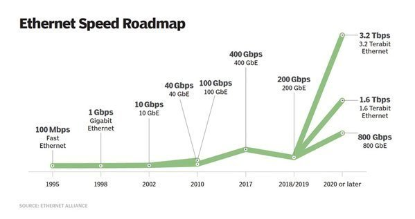

個人電腦 <<
Previous Next >> Switch
Network
Understanding bandwidth
Bandwidth refers to the data rate that is supported by the network connection or the interfaces that connect to the network. It represents both volume and time, representing the amount of data that can be transmitted between two points in a set period of time. It is usually expressed in terms of bits per second (bps), or sometimes in bytes per second (Bps).
Network bandwidth represents the capacity of the network connection, though it's important to understand the distinction between theoretical throughput and real-world results when figuring out the right bandwidth formula for your network. For example, a 1000BASE-T -- which uses unshielded twisted-pair cables -- Gigabit Ethernet (GbE) network can theoretically support 1,000 megabits per second (Mbps), but this level can never really be achieved in practice because of hardware and systems software overhead.
One point to consider when thinking about how to calculate bandwidth needs on your network is this: Bandwidth should not be confused with throughput, which refers to speed. While high-bandwidth networks are often fast, that is not always the case. A helpful metaphor when thinking about bandwidth is cars on a highway. A high-bandwidth network is like a six-lane highway that can fit hundreds of cars at any given moment. A low-bandwidth network is like a single-lane road in which one car queues directly behind another.
Although the large highway is likely to move vehicles faster, rush-hour traffic can easily bring cars and trucks to a standstill. Or, perhaps, the cars cannot get onto the highway quickly because it's clogged with large delivery trucks that take up a lot of space on the road. Similarly, even a high-bandwidth network can run slowly in the face of problems, such as congestion and bandwidth-hungry applications.
These very points make calculating bandwidth requirements a challenge, yet the consequences of getting the bandwidth formula wrong are considerable. If you don't procure enough bandwidth, you all but guarantee the network will run slowly. However, significantly overprovisioning bandwidth can be cost-prohibitive for most enterprises.
So, how do you determine the right formula that will meet your bandwidth requirements? The process begins with asking the right questions: What applications are users running, and what is the performance service-level agreement for these applications? I know some network managers who are only concerned with how many users are on a virtual LAN. What you really need to know is what the users will be doing on the network. It's possible that 200 users will cause less of a bottleneck than a group of three users that really beats the heck out of the network because of some funky client-server application or extensive use of a bandwidth-heavy service, like high-definition video conferencing.

了解 https://www.wireshark.org 的用法, 並藉以提升網路頻寬的使用效能及安全.
近端下載
http://a.kmol.info:88/Wireshark-win64-3.4.2.exe
個人電腦 <<
Previous Next >> Switch